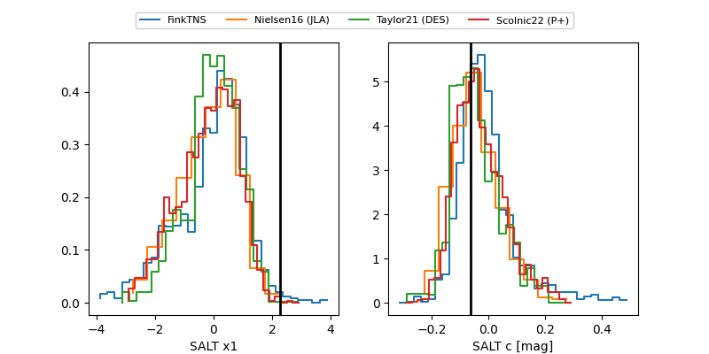

FINK: ZTF25abpjtgk
Lasair: ZTF25abpjtgk
ALeRCE: ZTF25abpjtgk
TNS: 2025xcf
YSE: 2025xcf
ZTF25abpjtgk (ztf,fink)
2025xcf (tns,yse)
equatorial (ra, dec) = (258.1614,+58.58940)
galactic (l, b) = (87.2868,+35.65957)

last ztfg=19.79, ztfr=19.76
6 ztfg, 7 ztfr detections